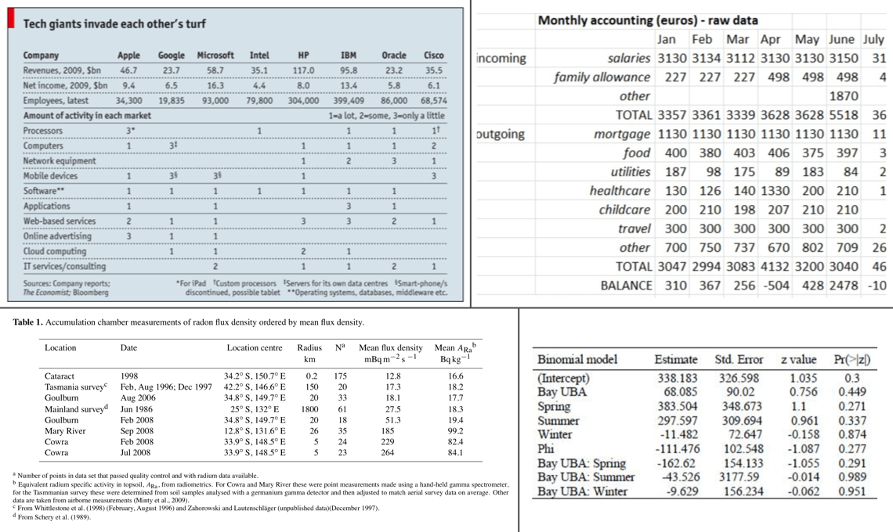

Introduction to Creating gt Tables
Source:vignettes/intro-creating-gt-tables.Rmd
intro-creating-gt-tables.RmdThe gt package is all about making it simple to
produce nice-looking display tables. Display tables? Well yes, we are
trying to distinguish between data tables (e.g., tibbles,
data.frames, etc.) and those tables you’d find in a web
page, a journal article, or in a magazine. Such tables can likewise be
called presentation tables, summary tables, or just tables really. Here
are some examples, ripped straight from the web:

We can think of display tables as output only, where we’d not want to use them as input ever again. Other features include annotations, table element styling, and text transformations that serve to communicate the subject matter more clearly.
A Walkthrough of the gt Basics with a Simple Table
Let’s use a less common dataset that is available in the R
datasets package: islands. It’s actually
not a data frame but a named vector. That’s okay though, we can use use
dplyr and prepare a tibble from it:
# Take the `islands` dataset and use some
# dplyr functionality to obtain the ten
# biggest islands in the world
islands_tbl <-
tibble(
name = names(islands),
size = islands
) |>
arrange(desc(size)) |>
slice(1:10)
# Display the table
islands_tbl
#> # A tibble: 10 × 2
#> name size
#> <chr> <dbl>
#> 1 Asia 16988
#> 2 Africa 11506
#> 3 North America 9390
#> 4 South America 6795
#> 5 Antarctica 5500
#> 6 Europe 3745
#> 7 Australia 2968
#> 8 Greenland 840
#> 9 New Guinea 306
#> 10 Borneo 280Given that islands_tbl is a tibble, we now have a
suitable input for gt.
The main entry point into the gt API is the
gt() function. If we pass islands_tbl to the
function gt(), we’ll get a gt
Table as output. As an aside, we could have easily used a data
frame instead as valid Table Data for
gt.
# Create a display table showing ten of
# the largest islands in the world
gt_tbl <- gt(islands_tbl)
# Show the gt Table
gt_tbl| name | size |
|---|---|
| Asia | 16988 |
| Africa | 11506 |
| North America | 9390 |
| South America | 6795 |
| Antarctica | 5500 |
| Europe | 3745 |
| Australia | 2968 |
| Greenland | 840 |
| New Guinea | 306 |
| Borneo | 280 |
That doesn’t look too bad. Sure, it’s basic but we really didn’t really ask for much. We did receive a proper table with column labels and the data. Also, that default striping is a nice touch. Oftentimes however, you’ll want a bit more: a Table header, a Stub, and sometimes footnotes and source notes in the Table Footer part.
Adding Parts to this Simple Table
The gt package makes it relatively easy to add parts so that the resulting gt Table better conveys the information you want to present. These table parts work well together and there the possible variations in arrangement can handle most tabular presentation needs. The previous gt Table demonstrated had only two parts, the Column Labels and the Table Body. The next few examples will show all of the other table parts that are available.
This is the way the main parts of a table (and their subparts) fit together:

The parts (roughly from top to bottom) are:
- the Table Header (optional; with a title and possibly a subtitle)
- the Stub and the Stub Head (optional; contains row labels, optionally within row groups having row group labels and possibly summary labels when a summary is present)
- the Column Labels (contains column labels, optionally under spanner column labels)
- the Table Body (contains columns and rows of cells)
- the Table Footer (optional; possibly with footnotes and source notes)
The way that we add parts like the Table Header and
footnotes in the Table Footer is to use the
tab_*() family of functions. A Table
Header is easy to add so let’s see how the previous table looks
with a title and a subtitle. We can
add this part using the tab_header() function:
# Make a display table with the `islands_tbl`
# table; put a heading just above the column labels
gt_tbl <-
gt_tbl |>
tab_header(
title = "Large Landmasses of the World",
subtitle = "The top ten largest are presented"
)
# Show the gt Table
gt_tbl| Large Landmasses of the World | |
| The top ten largest are presented | |
| name | size |
|---|---|
| Asia | 16988 |
| Africa | 11506 |
| North America | 9390 |
| South America | 6795 |
| Antarctica | 5500 |
| Europe | 3745 |
| Australia | 2968 |
| Greenland | 840 |
| New Guinea | 306 |
| Borneo | 280 |
The Header table part provides an opportunity to
describe the data that’s presented. The subtitle, which
functions as a subtitle, is an optional part of the
Header. We may also style the title and
subtitle using Markdown! We do this by wrapping the values
passed to title or subtitle with the
md() function. Here is an example with the table data
truncated for brevity:
# Use markdown for the heading's `title` and `subtitle` to
# add bold and italicized characters
gt(islands_tbl[1:2,]) |>
tab_header(
title = md("**Large Landmasses of the World**"),
subtitle = md("The *top two* largest are presented")
)| Large Landmasses of the World | |
| The top two largest are presented | |
| name | size |
|---|---|
| Asia | 16988 |
| Africa | 11506 |
A source note can be added to the table’s
footer through use of the
tab_source_note() function. It works in the same way as
tab_header() (it also allows for Markdown inputs) except it
can be called multiple times—each invocation results in the addition of
a source note.
# Display the `islands_tbl` data with a heading and
# two source notes
gt_tbl <-
gt_tbl |>
tab_source_note(
source_note = "Source: The World Almanac and Book of Facts, 1975, page 406."
) |>
tab_source_note(
source_note = md("Reference: McNeil, D. R. (1977) *Interactive Data Analysis*. Wiley.")
)
# Show the gt table
gt_tbl| Large Landmasses of the World | |
| The top ten largest are presented | |
| name | size |
|---|---|
| Asia | 16988 |
| Africa | 11506 |
| North America | 9390 |
| South America | 6795 |
| Antarctica | 5500 |
| Europe | 3745 |
| Australia | 2968 |
| Greenland | 840 |
| New Guinea | 306 |
| Borneo | 280 |
| Source: The World Almanac and Book of Facts, 1975, page 406. | |
| Reference: McNeil, D. R. (1977) Interactive Data Analysis. Wiley. | |
Footnotes live inside the Footer part and their
footnote marks are attached to cell data. Footnotes are added with the
tab_footnote() function. The helper function
cells_body() can be used with the location
argument to specify which data cells should be the target of the
footnote. The cells_body() helper has the two arguments
columns and rows. For each of these, we can
supply (1) a vector of colnames or rownames, (2) a vector of column/row
indices, (3) bare column names wrapped in c() or row labels
within c(), or (4) a select helper function
(starts_with(), ends_with(),
contains(), matches(), one_of(),
and everything()). For rows specifically, we
can use a conditional statement with column names as variables (e.g.,
size > 15000).
Here is a simple example on how a footnotes can be added to a table
cell. Let’s add a footnote that references the
North America and South America cells in the
name column:
# Add footnotes (the same text) to two different
# cell; data cells are targeted with `data_cells()`
gt_tbl <-
gt_tbl |>
tab_footnote(
footnote = "The Americas.",
locations = cells_body(columns = name, rows = 3:4)
)
# Show the gt table
gt_tbl| Large Landmasses of the World | |
| The top ten largest are presented | |
| name | size |
|---|---|
| Asia | 16988 |
| Africa | 11506 |
| North America1 | 9390 |
| South America1 | 6795 |
| Antarctica | 5500 |
| Europe | 3745 |
| Australia | 2968 |
| Greenland | 840 |
| New Guinea | 306 |
| Borneo | 280 |
| Source: The World Almanac and Book of Facts, 1975, page 406. | |
| Reference: McNeil, D. R. (1977) Interactive Data Analysis. Wiley. | |
| 1 The Americas. | |
Here is a slightly more complex example of adding footnotes that use
expressions in rows to help target cells in a column by the
underlying data in islands_tbl. First, a set of
dplyr statements obtains the name of the ‘island’ by
largest landmass. This is assigned to the largest object
and is used in the first tab_footnote() call that targets
the cell in the size column that is next to a
name value that is stored in largest (‘Asia’).
The second tab_footnote() is similar except we are
supplying a conditional statement that gets the lowest population.
# Determine the row that contains the
# largest landmass ('Asia')
largest <-
islands_tbl |>
arrange(desc(size)) |>
slice(1) |>
pull(name)
# Create two additional footnotes, using the
# `columns` and `where` arguments of `data_cells()`
gt_tbl <-
gt_tbl |>
tab_footnote(
footnote = md("The **largest** by area."),
locations = cells_body(
columns = size,
rows = name == largest
)
) |>
tab_footnote(
footnote = "The lowest by population.",
locations = cells_body(
columns = size,
rows = size == min(size)
)
)
# Show the gt table
gt_tbl| Large Landmasses of the World | |
| The top ten largest are presented | |
| name | size |
|---|---|
| Asia | 1 16988 |
| Africa | 11506 |
| North America2 | 9390 |
| South America2 | 6795 |
| Antarctica | 5500 |
| Europe | 3745 |
| Australia | 2968 |
| Greenland | 840 |
| New Guinea | 306 |
| Borneo | 3 280 |
| Source: The World Almanac and Book of Facts, 1975, page 406. | |
| Reference: McNeil, D. R. (1977) Interactive Data Analysis. Wiley. | |
| 1 The largest by area. | |
| 2 The Americas. | |
| 3 The lowest by population. | |
We were able to supply the reference locations in the table by using
the cells_body() helper function and supplying the
necessary targeting through the columns and
rows arguments. Other cells_*() functions have
similar interfaces and they allow us to target cells in different parts
of the table.
The Stub
The Stub is the area to the left in a table that contains row labels, and may contain row group labels, and summary labels. Those subparts can be grouped in a sequence of row groups. The Stub Head provides a location for a label that describes the Stub. The Stub is optional since there are cases where a Stub wouldn’t be useful (e.g., the display tables presented above were just fine without a Stub).
An easy way to generate a Stub part is by specifying
a stub column in the gt() function with the
rowname_col argument. This will signal to
gt that the named column should be used as the stub,
making row labels. Let’s add a stub with our
islands_tbl dataset by modifying the call to
gt():
# Create a gt table showing ten of the
# largest islands in the world; this
# time with a stub
gt_tbl <-
islands_tbl |>
gt(rowname_col = "name")
# Show the gt table
gt_tbl| size | |
|---|---|
| Asia | 16988 |
| Africa | 11506 |
| North America | 9390 |
| South America | 6795 |
| Antarctica | 5500 |
| Europe | 3745 |
| Australia | 2968 |
| Greenland | 840 |
| New Guinea | 306 |
| Borneo | 280 |
Notice that the landmass names are off the the left in an unstriped
area? That’s the stub. We can apply what’s known as a
stubhead label. This label can be added with the
tab_stubhead() function:
# Generate a simple table with a stub
# and add a stubhead label
gt_tbl <-
gt_tbl |>
tab_stubhead(label = "landmass")
# Show the gt table
gt_tbl| landmass | size |
|---|---|
| Asia | 16988 |
| Africa | 11506 |
| North America | 9390 |
| South America | 6795 |
| Antarctica | 5500 |
| Europe | 3745 |
| Australia | 2968 |
| Greenland | 840 |
| New Guinea | 306 |
| Borneo | 280 |
A very important thing to note here is that the table now has one
column. Before, when there was no stub, two columns
were present (with column labels name and
size) but now column number 1 (the only
column) is size.
To apply our table parts as before (up to and including the footnotes) we use the following statements:
# Display the `islands_tbl` data with a stub,
# a heading, source notes, and footnotes
gt_tbl <-
gt_tbl |>
tab_header(
title = "Large Landmasses of the World",
subtitle = "The top ten largest are presented"
) |>
tab_source_note(
source_note = "Source: The World Almanac and Book of Facts, 1975, page 406."
) |>
tab_source_note(
source_note = md("Reference: McNeil, D. R. (1977) *Interactive Data Analysis*. Wiley.")
) |>
tab_footnote(
footnote = md("The **largest** by area."),
locations = cells_body(
columns = size, rows = largest
)
) |>
tab_footnote(
footnote = "The lowest by population.",
locations = cells_body(
columns = size, rows = contains("arc")
)
)
# Show the gt table
gt_tbl| Large Landmasses of the World | |
| The top ten largest are presented | |
| landmass | size |
|---|---|
| Asia | 1 16988 |
| Africa | 11506 |
| North America | 9390 |
| South America | 6795 |
| Antarctica | 2 5500 |
| Europe | 3745 |
| Australia | 2968 |
| Greenland | 840 |
| New Guinea | 306 |
| Borneo | 280 |
| Source: The World Almanac and Book of Facts, 1975, page 406. | |
| Reference: McNeil, D. R. (1977) Interactive Data Analysis. Wiley. | |
| 1 The largest by area. | |
| 2 The lowest by population. | |
Let’s incorporate row groups into the display table. This divides
rows into groups, creating row groups, and results in a display
of a row group labels right above the each group. This can be
easily done with a table containing row labels. We can make a new
row group with each call of the tab_row_group()
function. The inputs are row group names in the label
argument, and row references in the rows argument. We can
use any of the strategies to reference rows as we did we footnotes
(e.g., vectors of names/indices, select helpers, etc.).
Here we will create three row groups (with row group labels
continent, country, and
subregion) to have a grouping of rows.
# Create three row groups with the
# `tab_row_group()` function
gt_tbl <-
gt_tbl |>
tab_row_group(
label = "continent",
rows = 1:6
) |>
tab_row_group(
label = "country",
rows = c("Australia", "Greenland")
) |>
tab_row_group(
label = "subregion",
rows = c("New Guinea", "Borneo")
)
# Show the gt table
gt_tbl| Large Landmasses of the World | |
| The top ten largest are presented | |
| landmass | size |
|---|---|
| subregion | |
| New Guinea | 306 |
| Borneo | 280 |
| country | |
| Australia | 2968 |
| Greenland | 840 |
| continent | |
| Asia | 1 16988 |
| Africa | 11506 |
| North America | 9390 |
| South America | 6795 |
| Antarctica | 2 5500 |
| Europe | 3745 |
| Source: The World Almanac and Book of Facts, 1975, page 406. | |
| Reference: McNeil, D. R. (1977) Interactive Data Analysis. Wiley. | |
| 1 The largest by area. | |
| 2 The lowest by population. | |
Three row groups have been made since there are three unique
categories under groupname. Across the top of each row
group is the row group label contained in a separate row
(these cut across the field and they contain nothing but the row
group label). A rearrangement of rows is carried out to ensure each
of the rows is collected within the appropriate row groups.
Having groups of rows in row groups is a great way to present information. Including data summaries particular to each group is a natural extension of this idea. This process of adding summary rows with summary labels is covered in a separate article (Creating Summary Lines).
Another way to make row groups is to have a column of group names
present in the input data table. For our above example with
islands_tbl, having a groupname column with
the categories continent, country, and
subregion in the appropriate rows would produce row groups
when using the gt() function’s groupname_col
argument (e.g.,
gt(islands_tbl, rowname_col = "name", groupname_col = "groupname") |> ...).
Then, there would be no need to use the tab_row_group()
statements. This strategy of supplying group names in a column can
sometimes be advantageous since we can rely on functions such as those
available in dplyr to generate the categories (e.g.,
using case_when() or if_else()).
The Column Labels
The table’s Column Labels part contains, at a
minimum, columns and their column labels. The last example had
a single column: size. Just as in the
Stub, we can create groupings called spanner
columns that encompass one or more columns.
To better demonstrate how Column Labels work and are
displayed, let’s use an input data table with more columns. In this
case, that input table will be airquality. It has the
following columns:
-
Ozone: mean ground-level ozone in parts per billion by volume (ppbV), measured between 13:00 and 15:00 -
Solar.R: solar radiation in Langley units (cal/m2), measured between 08:00 and noon -
Wind: mean wind speed in miles per hour (mph) -
Temp: maximum daily air temperature in degrees Fahrenheit (°F) -
Month,Day: the numeric month and day of month for the record
We know that all measurements took place in 1973, so a
year column will be added to the dataset before it is
passed to gt().
Let’s organize the time information under a Time
spanner column label, and put the other columns under a
Measurement spanner column label. We can do this
with the tab_spanner() function.
# Modify the `airquality` dataset by adding the year
# of the measurements (1973) and limiting to 10 rows
airquality_m <-
airquality |>
mutate(Year = 1973L) |>
slice(1:10)
# Create a display table using the `airquality`
# dataset; arrange columns into groups
gt_tbl <-
gt(airquality_m) |>
tab_header(
title = "New York Air Quality Measurements",
subtitle = "Daily measurements in New York City (May 1-10, 1973)"
) |>
tab_spanner(
label = "Time",
columns = c(Year, Month, Day)
) |>
tab_spanner(
label = "Measurement",
columns = c(Ozone, Solar.R, Wind, Temp)
)
# Show the gt table
gt_tbl| New York Air Quality Measurements | ||||||
| Daily measurements in New York City (May 1-10, 1973) | ||||||
| Measurement | Time | |||||
|---|---|---|---|---|---|---|
| Ozone | Solar.R | Wind | Temp | Year | Month | Day |
| 41 | 190 | 7.4 | 67 | 1973 | 5 | 1 |
| 36 | 118 | 8.0 | 72 | 1973 | 5 | 2 |
| 12 | 149 | 12.6 | 74 | 1973 | 5 | 3 |
| 18 | 313 | 11.5 | 62 | 1973 | 5 | 4 |
| NA | NA | 14.3 | 56 | 1973 | 5 | 5 |
| 28 | NA | 14.9 | 66 | 1973 | 5 | 6 |
| 23 | 299 | 8.6 | 65 | 1973 | 5 | 7 |
| 19 | 99 | 13.8 | 59 | 1973 | 5 | 8 |
| 8 | 19 | 20.1 | 61 | 1973 | 5 | 9 |
| NA | 194 | 8.6 | 69 | 1973 | 5 | 10 |
We can do two more things to make this presentable:
- move the
Timecolumns to the beginning of the series (usingcols_move_to_start()) - customize the column labels so that they are more descriptive (using
cols_label())
Let’s do both of these things in the next example.
# Move the time-based columns to the start of
# the column series; modify the column labels of
# the measurement-based columns
gt_tbl <-
gt_tbl |>
cols_move_to_start(
columns = c(Year, Month, Day)
) |>
cols_label(
Ozone = html("Ozone,<br>ppbV"),
Solar.R = html("Solar R.,<br>cal/m<sup>2</sup>"),
Wind = html("Wind,<br>mph"),
Temp = html("Temp,<br>°F")
)
# Show the gt table
gt_tbl| New York Air Quality Measurements | ||||||
| Daily measurements in New York City (May 1-10, 1973) | ||||||
| Time | Measurement | |||||
|---|---|---|---|---|---|---|
| Year | Month | Day | Ozone, ppbV |
Solar R., cal/m2 |
Wind, mph |
Temp, °F |
| 1973 | 5 | 1 | 41 | 190 | 7.4 | 67 |
| 1973 | 5 | 2 | 36 | 118 | 8.0 | 72 |
| 1973 | 5 | 3 | 12 | 149 | 12.6 | 74 |
| 1973 | 5 | 4 | 18 | 313 | 11.5 | 62 |
| 1973 | 5 | 5 | NA | NA | 14.3 | 56 |
| 1973 | 5 | 6 | 28 | NA | 14.9 | 66 |
| 1973 | 5 | 7 | 23 | 299 | 8.6 | 65 |
| 1973 | 5 | 8 | 19 | 99 | 13.8 | 59 |
| 1973 | 5 | 9 | 8 | 19 | 20.1 | 61 |
| 1973 | 5 | 10 | NA | 194 | 8.6 | 69 |
Note that even though columns were moved using
cols_move_to_start(), the spanner column labels
still spanned above the correct column labels. There are a
number of functions that gt provides to move columns,
including cols_move(), cols_move_to_end();
there’s even a function to hide columns: cols_hide().
Multiple columns can be renamed in a single use of
cols_label(). Further to this, the helper functions
md() and html() can be used to create column
labels with additional styling. In the above example, we provided column
labels as HTML so that we can insert linebreaks with
<br>, insert a superscripted 2 (with
<sup>2</sup>), and insert a degree symbol as an
HTML entity (°).